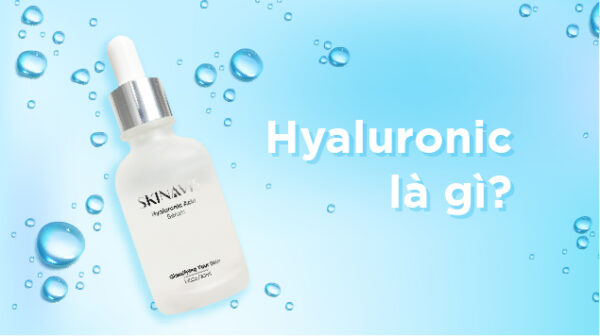

Hyaluronic Acid (HA) là gì ? Tại sao cần sử dụng

HYALURONIC ACID LÀ GÌ?
HA hay hyaluronic acid là một phân tử dạng gel có khả năng rất tốt, nó là chất đệm trong cơ thể, nó lấp đầy các khoảng trống giữa các tế bào. Nó tập chung chủ yếu ở vùng trung bì của da, để làm cho da được căng, được ẩm hơn, và nó nằm giữa các xương khớp, thần kinh để giúp xương khớp, thần kinh được hoạt động tốt hơn. Ngoài chức năng ở ngoài da làm cho da mịn màng, đẹp hơn, nó còn có chức năng giúp cho sức khỏe của xương khớp và các vùng mắt.
HA được các nhà khoa học phát hiện vào năm 1934, nhưng lúc đó nó chưa được ứng dụng nhiều, nó thực sự tỏa sáng vào những năm thập niên 80,90 của thế kỷ 20. Khi đó có 1 phóng viên đến 1 làng của nhật, lúc đó họ gặp những người đàn ông, những người phụ nữ của họ ở đó, nhìn da họ rất đẹp, rất trẻ và tí nếp nhăn, trẻ hơn so với tuổi rất nhiều. Khi khám phá ra, những người trong làng đó, họ ăn đậu nành, đậu hũ rất nhiều, thực tế những loại đậu nành, đậu hũ nó kích thích cơ thể sinh sản ra estrogen, đây chính là chất kích thích sản sinh ra HA của cơ thể.
Trong mỗi cơ thể người chúng ta có khoảng 15g HA, nó được thay đổi và làm mới mỗi ngày, nhưng sẽ bị giảm đi theo độ lão hóa theo tuổi tác của chúng ta. Tới khi 40 tuổi , lượng HA trong cơ thể mỗi người giảm chỉ còn khoảng 1 nửa nữa thôi. Vậy khi chúng ta càng già, da càng lão hóa thì da chúng ta bắt đầu nhăn nheo, mất nước, hơn nữa HA trong cơ thể thì nó tập chung ở lớp trung bì của da.
Ở trung bì tập chung chủ yếu là Colagen, HA. Một nửa HA của cơ thể tập chung ở trung bì, chính vì vậy HA sẽ quyết định được độ đẹp của da. HA được gọi nó như một phân tử ngậm nước , khi cho vào nước trong da, trọng lượng của nó có thể tăng cả trăm lần – tương tự như miếng bọt biển vậy. Chính vì vậy khi chúng ta sử dụng HA, nồng bộ HA ở lớp trung bì cao, thì da sẽ được ẩm, mượt và căng bóng hơn
Ngày nay HA được xem như chất rất quan trọng ngang với các chất như Colagen. Tác dụng của Colagen cũng có tác dụng rất quan trọng như làm căng da, hạn chế lão hóa, hạn chế các nếp nhăn, HA cũng tác dụng tương tự như Colagen. Ngoài ra công nghệ của chúng ta càng ngày càng phát triển, HA không những sản suất ở trong mỹ phẩm , ngoài ra còn sản xuất để sử dụng trong tiêm môi, hoặc da để giúp các thành phần này được căng bóng – hay còn biết đến với tên filer môi, filer da.
Tác dụng chính của HA là gì?
Tác dụng chính của HA là : chống lão hóa và tăng cường độ ẩm cho da vì nó có khả năng hút nước mạnh ở môi trường vào da. Cho nên khi sử dụng HA, chúng ta có cảm giác, da lúc nào cũng được căng bóng
Bình thường chúng ta bổ sung HA như thế nào?
Có 2 cách bổ sung HA:
1- Sử dụng phương pháp uống.
2- Sử dụng phương pháp bôi.
Sử dụng phương pháp uống: Người ta hạn chế sử dụng phương pháp này
Sử dụng phương pháp bôi:
Đây là phương pháp sử dụng chính. HA có trong rất nhiều mỹ phẩm. Nên sử dụng HA có nồng độ 2% trở xuống. Các bạn có thể mua các loại kem, serum có chứa HA để sử dụng. Khi sử dụng có khả năng giữ ẩm, chống lão hóa cho da rất tốt
Những thực phẩm như nào giúp bổ sung HA cho cơ thể?
Các sản phẩm từ đậu nành chứa phytoestrogen, chất này làm kích thích sản xuất HA của cơ thể, nên chúng ta có thể tăng cường sử dụng các sản phẩm này.
Thứ hai, các loại rượu vang đỏ, các nghiên cứu cho thấy, trong vò các loại nho đỏ có chứa một hoạt chất có khả năng kích thích cơ thể sản sinh nhiều HA hơn, mỗi ngày các bạn có thể sử dụng một ít rượu vang đỏ hoặc ăn một vài trái nho đỏ để tăng lượng estrogen và HA của cơ thể
Một số loại rau củ quả chứa nhiều vitamin C và magie cũng có khả năng sinh sản ra HA.
Nên sử dụng HA như thế nào?
HA là một phân tử ngậm nước, có khả năng như một miếng bọt biển, khi bôi lên da, nó có thể hút nước từ môi trường từ bên ngoài vào da, để cung cấp nước, cung cấp ẩm cho da, vì vậy khi sử dụng, chúng ta nên bôi vào khi da còn ẩm như khi mới rửa mặt xong, da vẫn còn độ ẩm nhất định, để cho nó hấp thụ nước vào da được tốt hơn.
Khi các bạn đắp mặt nạ giấy, chúng ta có thể bôi HA trước khi sử dụng mặt nạ giấy để tăng khả năng hấp thụ các chất có trong mặt nạ được tốt hơn. Trong các môi trường hanh khô, các bạn bôi HA, nên sử dụng thêm máy tạo ẩm không khí, vì trong môi trường hanh khô, chúng ta bôi HA , HA khi này sẽ hút nước, độ ẩm từ trong da ra khỏi cơ thể .
Đây là những kiến thức cơ bản về HA – Hyaluronic Acid. Hy vọng những thông tin này sẽ mang lại hữu ích cho bạn đọc.